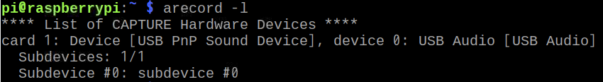
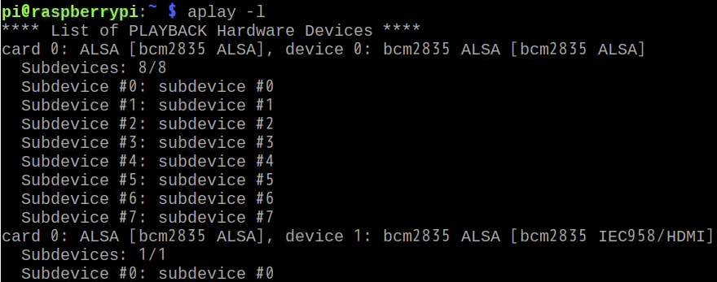

前言
之前 Dialogflow打造專屬Google Assistant App ，只是應用 Dialogflow 做測試，或者手機上的 Google Assistant ，但在實際應用上還是挺麻煩的，於是乎這篇就現身了，此篇教學如何讓樹莓派變身為 Google Home。
設備
在開始之前需要準備以下：
- 樹莓派並安裝好NOOBS
- USB 麥克風
- 喇叭(3.5mm 或 USB)
硬體測試
首先必須將麥克風及喇叭接到樹莓派上，並記錄裝置位置
- 打開樹莓派終端機，找到 USB 麥克風
1
arecord -l

- 找到喇叭，需注意如果使用 3.5mm 找到的位置是 Analog 或 bcm2835 ALSA，不是 bcm2835 IEC958/HDMI
1
aplay -l

在樹莓派路徑(/home/pi)裡創建一個新檔案，檔名為
.asoundrc，並填入剛剛紀錄的裝置位置，註解處為我的設定1
2
3
4
5
6
7
8
9
10
11
12
13
14
15
16
17pcm.!default {
type asym
capture.pcm "mic"
playback.pcm "speaker"
}
pcm.mic {
type plug
slave {
pcm "hw:<card number>,<device number>" //pcm "hw:1,0"
}
}
pcm.speaker {
type plug
slave {
pcm "hw:<card number>,<device number>" // pcm "hw:0,1"
}
}測試喇叭
在終端機輸入以下，聽聽看喇叭是否有聲音，測試完畢後，鍵盤Ctrl+C 即可退出。1
speaker-test -t wav
測試麥克風
在終端機輸入以下，及開始錄音1
arecord --format=S16_LE --duration=5 --rate=16000 --file-type=raw out.raw
聽取剛剛路的一小段錄音，確認是否正常運作1
aplay --format=S16_LE --rate=16000 out.raw
註冊裝置
開啟註冊頁面
- 打開 Actions Console
- 選取之前創建過的專案
- 在左側選單選擇 Connected properties
- 選擇 DEVICE MODELS
- 點擊 REGISTER MODEL

註冊裝置
- 填入所有資訊
- 完畢後點擊 REGISTER MODEL

下載證書
這是個很重要的檔案，之後安裝 Assistant SDK 需要用到它，下載到電腦後，我們必須將檔案傳到樹莓派，路徑為/home/pi
- 打開電腦終端機(非樹莓派)，利用 scp 指令傳送檔案 ，並輸入密碼，即可將檔案傳到樹莓派。
1
scp ~/Downloads/credentials.json pi@raspberry-pi-ip-address:/home/pi/

特別特徵
這步驟主要是強調裝置支持的功能，可以先點 SKIP
完成後可以看到以下
安裝SDK
首先樹莓派裡需要有安裝 Python ，通常在裝 NOOBS 就會預先安裝了。
Python 虛擬環境
為什麼要安裝虛擬環境？ 因為開發過程我們會安裝許多套件，如果不獨立則會全部安裝在 Global 的環境，之後要打包就會比較麻煩。
Python 3：1
2
3
4
5sudo apt-get update
sudo apt-get install python3-dev python3-venv
python3 -m venv env
env/bin/python -m pip install --upgrade pip setuptools wheel
source env/bin/activate
Python 2.7：1
2
3
4
5sudo apt-get update
sudo apt-get install python-dev python-virtualenv
virtualenv env --no-site-packages
env/bin/python -m pip install --upgrade pip setuptools wheel
source env/bin/activate
安裝並開啟虛擬環境完成後，終端機開頭會變成 (env)
會出現 env 是因為我們第3步開啟的虛擬環境資料夾就叫 env ，之後如果需要再次開啟虛擬環境只需再次輸入第五步。 source activate 用意就是開始虛擬環境，如果要結束輸入以下。1
deactivate
安裝
Google Assistant 安裝包裡面包含程式碼外還有一些範例，安裝完畢後即可像Google Home一樣對話1
sudo apt-get install portaudio19-dev libffi-dev libssl-dev
1 | python -m pip install --upgrade google-assistant-library |
1 | python -m pip install --upgrade google-assistant-sdk[samples] |
認證
在認證之前還必須安裝工具
1
python -m pip install --upgrade google-auth-oauthlib[tool]
用之前下載的憑證進行認證，
在終端機輸入1
2google-oauthlib-tool --scope https://www.googleapis.com/auth/assistant-sdk-prototype \
--save --headless --client-secrets /home/pi/credentials.json你會看到一串網址在終端機
1
Please visit this URL to authorize this application: https://...
開啟網頁並前往複製的網址，你應該會看到登入Google 帳號要求
- 在開放權限後你會看到網頁出現 “4/XXXX”，複製並貼在終端機
1
Enter the authorization code:
成功之後會看到證書被儲存了1
credentials saved: /path/to/.config/google-oauthlib-tool/credentials.json
執行
先前步驟都完成了，現在只需要在終端機輸入以下即可讓樹莓派變身成為 Google Home。
- 填入
my-dev-project，此為 Actions Console 專案的ID，點擊左側選單 Overview 的齒輪，就可以看到 Project ID 。 - 填入
my-model，此為先前步驟所建立的 model ， 在 Connected properties 的 DEVICE MODELS 就可以看到 Model ID 。1
googlesamples-assistant-hotword --project_id my-dev-project --device_model_id my-model
開始用力的玩 Google Assistant 吧 ！ 你可以試試 Ok Google 或 Hey Google ，喚醒裝置並嘗試你的問題。
- Who am I?
- What time is it? &ensp
- What is the weather in San Francisco? &ensp
另外如果你已經完成 Dialogflow打造專屬Google Assistant App，還可以叫 Google Assistant 連到你的 App喔。
- Ok Google , Talk to …
- Switch my light on.